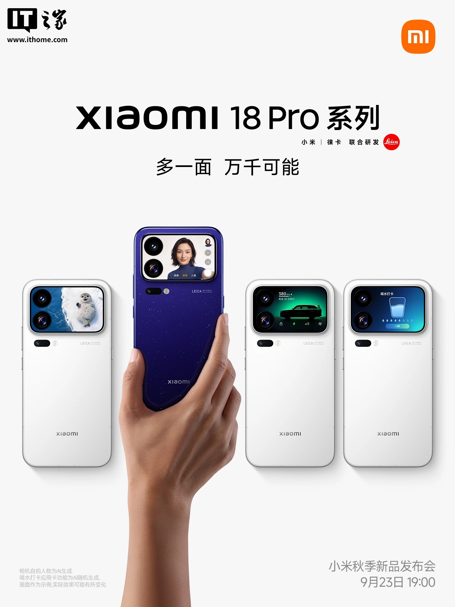
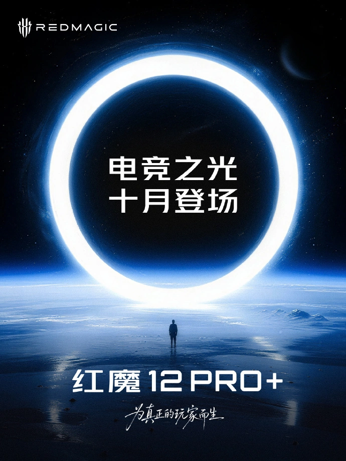
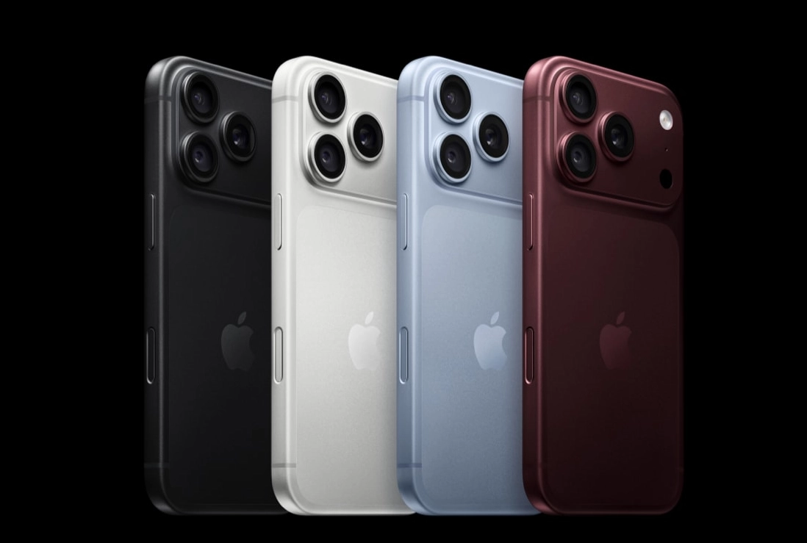
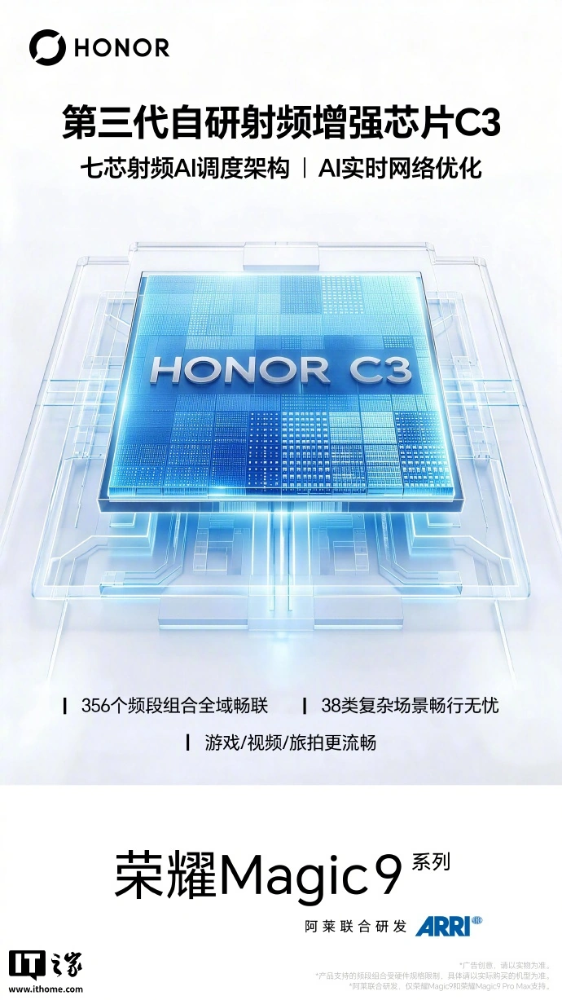

THE TECH EDIT
기술의 변화, 매일 한눈에.
카메라 · 스마트폰 · AI, 해외 테크 소식을 모아 전합니다.
최근 발행2026-09-21
새로 들어온 소식
LATEST STORIES
최신 뉴스
전체 3,151개 기사
Xiaomi 18 Pro 시리즈 스마트폰 9월 23일 공개: Xiaomi 디지털 시리즈 사상 최대 업그레이드, 새로운 백 변형 후면 스크린, Xiaomi HyperOS(Xiaomi澎湃 OS) 4 최초 탑재

루웨이빙, Xiaomi 18 Pro 시리즈 스마트폰 가격 책정에 대해 언급: "가격은 오르겠지만, 합리적이라고 생각하실 겁니다."

Xiaomi 18 Pro 시리즈 스마트폰, 2nm 플래그십 모바일 플랫폼 전 모델 탑재 공식 발표, 후면 라이카 듀얼 2억 화소 카메라

Xiaomi 폴더블 스마트폰 역사상 최고 판매량: Xiaomi 18 Fold, 출시 7일 만에 약 8만 대 판매
Sony, 산리오와 협력 확대… 헬로키티 한정판 Xperia 10 VIII 스마트폰 세트 출시

심광영상 AF 18mm F2.2 LE APS-C 카메라 렌즈 출시: Fujifilm X 마운트 첫 적용, 698위안

레드매직 12Pro+ 스마트폰, 다음 달 출시 공식 발표
OPPO Find X10 시리즈 스마트폰, 하셀블라드 초고화질 카메라 공식 발표: LUMO 팔레트 최초 탑재, 독점적인 피부 톤 보호 및 18가지 스타일 효과 제공

OnePlus 16 스마트폰, 원신 180FPS 초고프레임 지원… "DLSS4 동급" 게임 경험 제공 예정

코지마 히데오, Sony의 'PHYSINT' 투자 철회 논란에 대해 "우리는 서로 등 돌리지 않았다" 언급

징둥: Apple iPhone 18 Pro 시리즈 출시 1시간 만에 전국 3만 명 사용자 새 스마트폰 수령

Honor Magic9 시리즈 스마트폰, 3세대 자체 개발 RF 강화 칩 C3 탑재, 356개 주파수 대역 조합 스마트 전환 지원

창신 테크놀로지, 5세대 기술 플랫폼 양산 발표: 웨이퍼당 생산량 50% 이상 증가, 24GB LPDDR5X 국산 주류 플래그십 스마트폰에 전면 적용

구르만: Apple, 이르면 다음 달 스마트 홈 스크린 기기 출시, iPhone Duo 전용 스타일러스 계획 무산

IT之家, Apple iPhone 마케팅 부사장 카이안 드랜스와 독점 인터뷰: iPhone Duo는 기술뿐만 아니라 최종 사용자 경험을 추구합니다

분석가: Apple의 "iPhone 18 출시 주기 분할" 전략이 성공하여 일부 사용자가 Pro 모델로 전환했다

Apple iPhone 18 Pro 시리즈 스마트폰 중국 내 첫 판매량 공개: 출시 당일 약 32만 2,800대, iPhone 17 Pro 시리즈의 약 130%

Apple iPhone 18 Pro, DXOMARK 이미지 테스트 결과 공개: 총점 172점으로 Huawei Pura 80 Ultra에 이어 세계 2위
Apple 하드웨어 엔지니어링 책임자 톰 말리부: 아이폰 화면에 보호필름을 붙이는 사람을 볼 때마다 불편함을 느낍니다

루웨이빙: 진정한 의미의 AI 스마트폰이 우리 삶에 들어오기까지는 아직 갈 길이 멀다

Huawei: Ascend 초노드 기반으로 훈련된 Xingchen 경량 코드 지능형 대규모 모델 Xing4.0-29B 출시
검색 결과가 없습니다
다른 검색어를 입력하거나 필터를 초기화해 보세요.